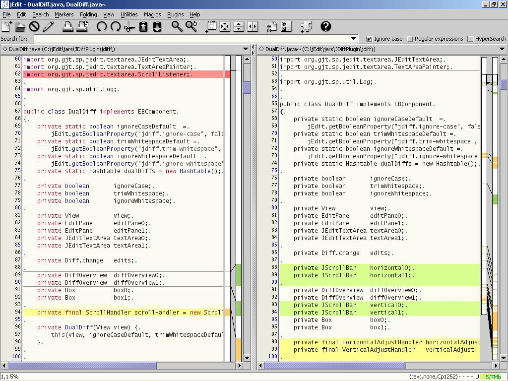

| JDiff Plugin |
By André Kaplan
akaplan@jedit.org |
JDiffPlugin is a visual diff utility for jEdit.
It features:
- Diff overviews (local and global)
- Synchronized scrolling
- Ignore case option
- Ignore leading and trailing whitespace option
- Ignore all whitespace option
- Normal diff output
It requires:
- Split your view in two (vertically)
Note: JDiff will split your view in two if necessary.
- Edit the buffers you want to compare:
- the buffer on the left is the original
- the buffer on the right is the revision
- Activate JDiff:
Plugins -> JDiff -> Dual Diff
- Figure 1 shows the result
|  |
| Figure 1 - JDiff Plugin |
Once JDiff is activated as in Figure 1, you should see:
- Text Highlights
- A local overview (right of the original)
- A global overview (right of the revision)
Color conventions
By default:
- Changed lines appear in yellow
- Deleted (from the original) lines appear in red
- Inserted (to the revision) lines appear in green
- Invalid lines appear as thin dark grey lines.
- In the original, invalid lines indicate where a block was inserted
in the revision.
- In the revision, invalid lines indicate where a block was deleted in
the original.
Local overview
The local overview shows how the visible changed/inserted/deleted blocks
from the original and the revision relate to each other.
Global overview
The global overview should help you estimate how the two edited buffers
differ.
It also displays two cursors which indicate the visible parts of the two
buffers.
- Refresh: refreshes the diff display
- Go to previous/next difference
- Ignore case: toggles the "Ignore case" option for the current diff
- Ignore leading and trailing whitespace: toggles the "Ignore leading and trailing whitespace" option for the current diff
- Ignore all whitespace: toggles the "Ignore all whitespace" option for the current diff
- Normal Diff Output: generates a diff file using the normal method
Line comparison options
You can configure how JDiff compares lines by default. JDiff can:
- Ignore case: upper-cased lines are compared.
- Ignore leading and trailing whitespace: lines are compared as if
leading and trailing whitespaces were removed.
- Ignore all whitespace: lines are compared as if any
- leading and trailing whitespaces were removed
- sequence of whitespaces were replaced by one single space.
Global overview display
- Virtual overview: uses the virtual representation of
buffers for its display
- Physical overview: uses the physical representation of
buffers for its display
Overview colors
You can configure the colors of:
- Changed lines
- Deleted lines
- Inserted lines
- Invalid lines
- Left cursor in the global overview
- Right cursor in the global overview
Highlight colors
You can configure the colors of:
- Changed lines
- Deleted lines
- Inserted lines
- Invalid lines
The selected highlight colors allow to distinguish the selected parts
within text highlights. You can configure the colors of:
- Selected changed lines
- Selected deleted lines
- Selected inserted lines
The preferred way to send bug reports is to use the Bug Tracker at
http://sourceforge.net/bugs/?group_id=588.
Also you can write to:
- André Kaplan <akaplan@jedit.org>;
- or jEdit-users mailing-list <jedit-users@lists.sourceforge.net>;
- or jEdit-devel mailing.list <jedit-devel@lists.sourceforge.net>.